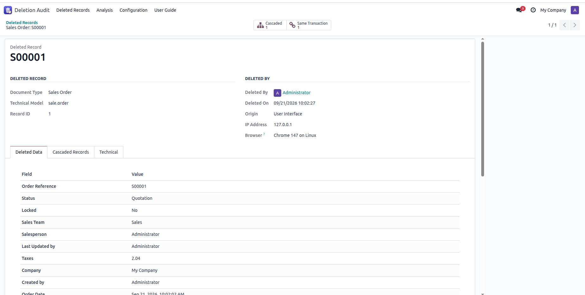
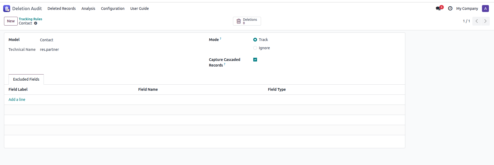
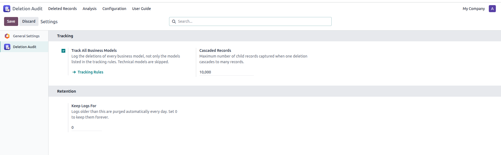

A record disappears and nobody knows what happened? Standard Odoo keeps no trace of deleted records. Deletion Audit Trail keeps a permanent, read-only log of every deletion, with a full snapshot of the data, including the lines and child records that were deleted with it.

A deleted quotation: who deleted it, when, from where, and every field it contained.
User, date and time, IP address, browser, and channel: user interface, external API, website, scheduled action or script.
Every field of the deleted record, readable field by field: customer names, tags, amounts, dates and statuses, plus the list of its attachments.
Invoice lines, order lines, stock moves... the records deleted together with the main record are captured too, and linked to it.
The snapshot is taken before Odoo starts deleting, so you see the record as it really was, not a half-cancelled version.
Find a deleted record by any value it contained: an email, a reference, an amount, a product name...
Nobody can edit or delete a log from the interface, not even administrators. Logs are only removed by your retention policy.
Data Recycle deletes old records without keeping any trace of what they contained. With Deletion Audit Trail installed, every record it deletes is logged with its full data: as a Scheduled Action for automatic rules, or with the name of the user who clicked Validate.

One rule per document type: track it or ignore it, capture its child records, and leave sensitive fields out of the snapshot.

Or track every business model at once, and decide how long the logs are kept.
Contact Muhammad Ramzan. Questions, bug reports and feature requests are welcome.